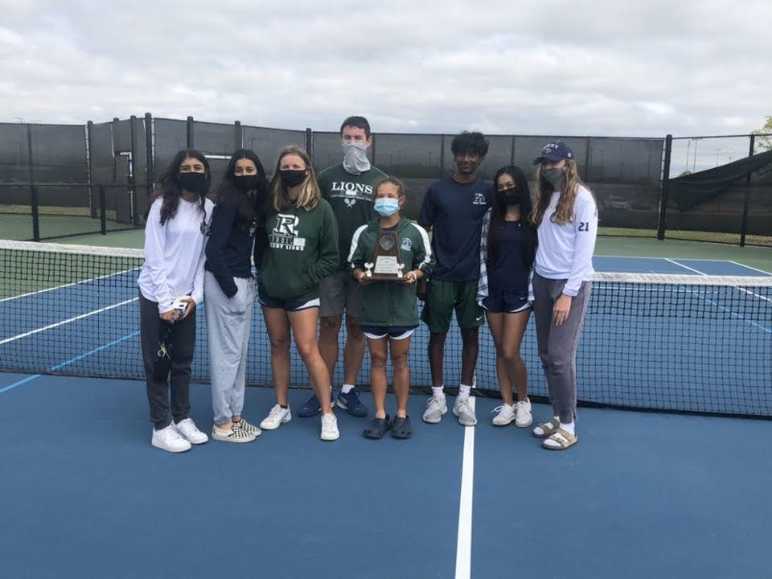
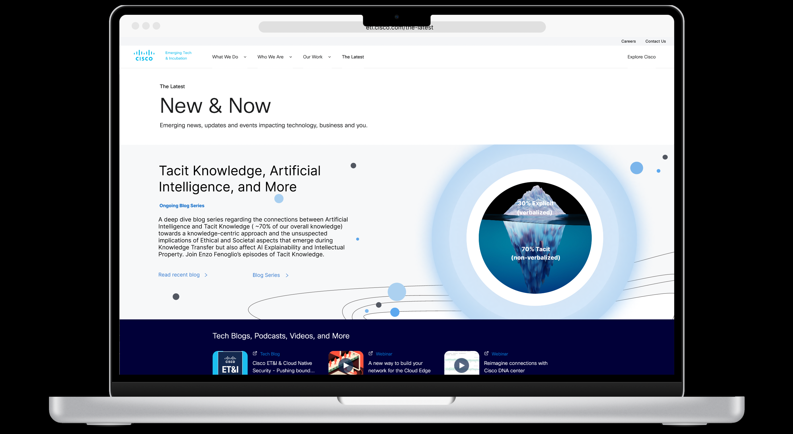
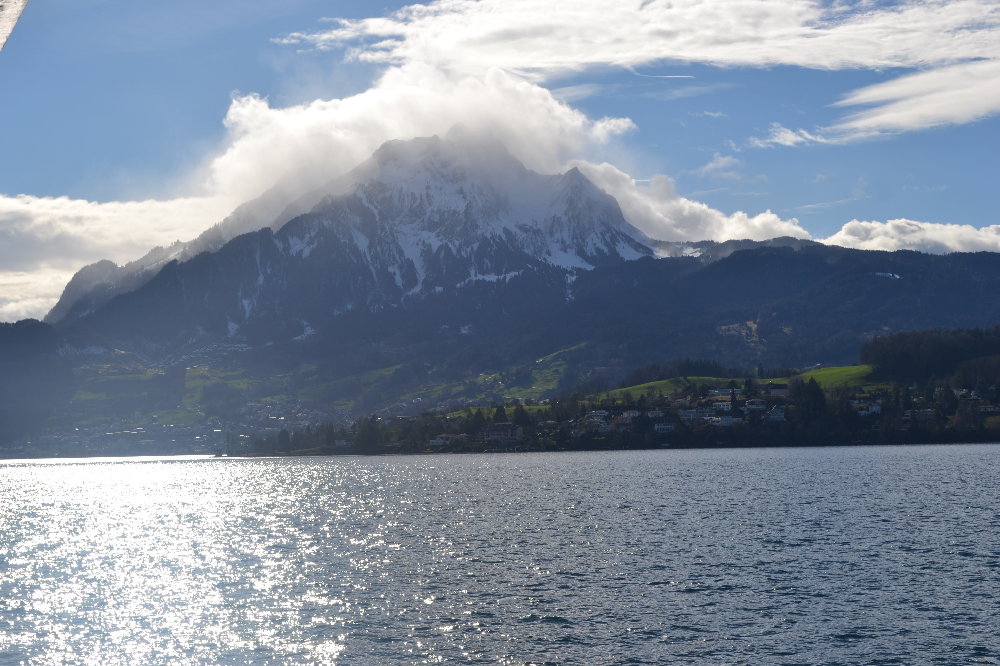

Aditi Kanujia
Hobbies
Tennis
Tennis was one of my earliest hobbies that I had gained through the passions of my father. It started when my family and I would spend hours in front of the T.V watching Federer and Nadal battle it out in some grand slam final. Since then, tennis became my life. I competitively started playing in middle school and though I don't play competitively anymore, I always enjoy playing a quick two set game with my friends and watch grand slams.
Design
Since a young age I have always had a fascination with creative designing. Whether it was coloring in Kindergarten or designing website in college, the field of design has followed me throughout my life. I was fortunate enough to showcase my work in my Cisco internship where I prototyped some work for them to be published later. Moving forward, I hope to pursue those passions in my career by either pursuing a job in Product Management for fashion tech company or UI/UX Design.
Travelling
Because of my dad's old travelling job my family and I quickly gained an addiction to travelling a lot. Learning about new cultures and experiencing new ways of living is a great interest of mine that I hope to pursue after college. Some cool places that me and my family have visited were Switzerland, Jamaica, Mexico, Alaska, and more.
